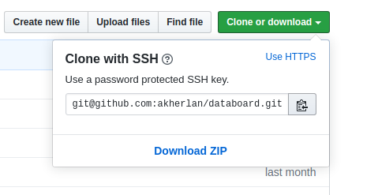

Ini ditulis supaya kemudian hari kalau lupa bisa saya buka lagi. Singkat cerita, seperti ini:
Apakah cukup jelas?
Langkah-langkah yang saya pakai secara teknis adalah seperti berikut:
1. Clone repositori databoard, saya pakai tautan ssh karena nyaman dan aman.
$ mkdir databoard && cd databoard
$ git clone git@github.com:akherlan/databoard.git master
Tautan repo copas dari bagian ini.

2. Gandakan hasil clone ke lokal tadi menjadi direktori gh-pages.
$ cp master gh-pages
3. Buat branch baru dengan nama “gh-pages” dari repo di direktori gh-pages yang nanti akan diunggah ke upstream “origin/gh-pages”.
$ cd gh-pages
$ git checkout origin/gh-pages -b gh-pages
Ini akan membuat pekerjaan yang dilakukan berpindah dan direkam ke branch “gh-pages” (bukan “master” lagi). Periksa dengan:
$ git branch
Tanda bintang ada di branch “gh-pages”.
4. Hapus branch “master” pada direktori gh-pages
$ git branch -d master
5. Hapus semua isi direktori gh-pages yang ada KECUALI direktori .git
6. Buat proyek laman web statis di direktori lain
Saya membuat direktori rproj (sebagai child dari direktori databoard) untuk membangun laman statis ini karena saya membuatnya menggunakan Rmarkdown.
7. Copas hasil rendernya ke direktori gh-pages yang tadi sudah kosong.
Mengapa tidak membuat alamat render langsung ditujukan ke direktori gh-pages? Karena nanti rekaman git-nya hilang. Rmarkdown akan mengganti/menimpa direktori gh-pages yang ada dan mengisinya dengan berkas-berkas baru hasil render.
Sebagai opsi, juga bisa gunakan version control pada direktori rproj ini, kalau diperlukan.
8. Lakukan commit dan push dari branch “gh-pages”
$ git add .
$ git commit -m "commit pertama untuk gh-pages"
$ git push origin gh-pages
Awas itu setelah add ada titiknya.
9. Atur agar Github Pages dijalankan dari branch “gh-pages”
Sampai di sini, laman sudah online di sini.
Berikutnya, direktori master bisa saya hapus/buang saja karena selanjutnya repositori databoard branch “master” langsung terhubung dan dikelola melalui paket pins di R.
Saya melakukan ini setelah membaca dua panduan ini(1) dan ini(2). Mana tau juga bisa bermanfaat buat teman-teman.
Terima kasih.